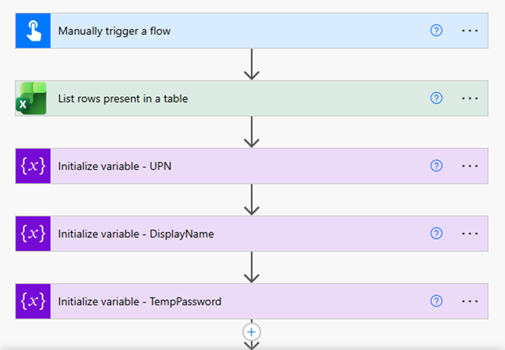
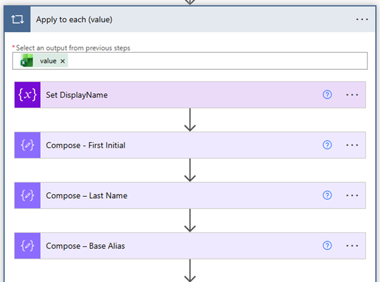
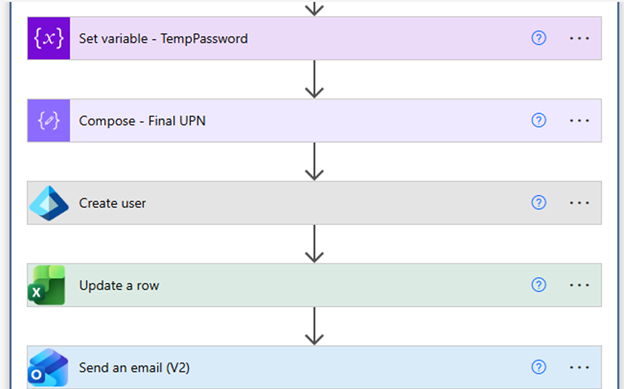

Platform
Microsoft 365
Microsoft Power Automate
Microsoft Entra ID
Project 002
Microsoft Power Automate · Microsoft Entra ID · Excel · Microsoft 365
Project goal: Automate new-user provisioning from an HR-managed Excel table, generate account details, create the Microsoft Entra ID user, update the tracking record, and send a welcome email.
This project demonstrates an automated employee onboarding solution built with Microsoft Power Automate, Microsoft Entra ID, Excel, and Microsoft 365. The workflow reduces repetitive administrative work by reading new-hire information from an HR spreadsheet, generating standardized identity values, creating the user account, updating the onboarding record, and sending a personalized welcome email.
I independently designed, built, tested, troubleshot, and documented the workflow. I created the Excel data structure, developed the Power Automate logic, generated display names and user principal names, created temporary passwords, provisioned users in Microsoft Entra ID, updated onboarding status, and configured the welcome email process.
Manual onboarding can require multiple repetitive steps across HR and IT. Each new hire may require account creation, username generation, temporary password creation, status tracking, and communication of access details. Manual processing increases the risk of inconsistent naming, missing information, delays, and data-entry errors.
The solution uses an Excel table as the onboarding intake source and Power Automate as the orchestration layer. The workflow:
Microsoft 365
Microsoft Power Automate
Microsoft Entra ID
Microsoft Excel table used as the HR onboarding intake and status-tracking source.
User provisioning
UPN generation
Temporary passwords
Status updates
Welcome email delivery
The workflow begins with a manual trigger, reads new-hire records from an Excel table, and initializes the variables required for the user principal name, display name, and temporary password.

An Apply to each loop processes every Excel record. The workflow builds the display name and generates the first initial, last name, and base alias used for the account naming convention.

The workflow creates the Microsoft Entra ID account using the generated values, updates the corresponding Excel row, and sends the welcome email.

The Excel table provides a structured intake method for new-hire information and a record of onboarding status.
Challenge: Building a consistent account name from employee data while keeping the logic reusable.
Solution: Separated the first initial, last name, base alias, and final UPN into dedicated Compose and variable actions.
Challenge: Creating a temporary credential that could be used during account creation and communicated through the onboarding process.
Solution: Generated and stored the temporary password in a workflow variable, then reused it in the account-creation and notification steps.
Challenge: Keeping HR intake information and IT provisioning status aligned.
Solution: Used the Excel table as both the intake source and the status-tracking record, allowing the workflow to update the same row after processing.
Successfully created a reusable Microsoft 365 onboarding workflow that connects HR intake data with Microsoft Entra ID provisioning, account naming, temporary password generation, status tracking, and welcome-email delivery.
Microsoft 365
Microsoft Entra ID
Identity lifecycle management
User provisioning
Power Automate
Variables and Compose actions
Apply to each loops
Excel integration
Process improvement
Troubleshooting
Technical documentation
Solution design